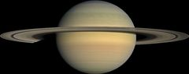
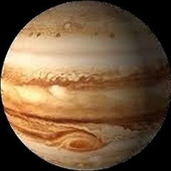
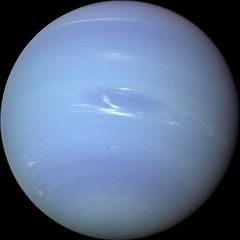

Venus |
Saturn  |
Jupiter  |
Neptune  |
|
|---|---|---|---|---|
| Mass 1024kg | 4.87 | 568 | 1898 | 102 |
| Distance from Sun 106km | 108.2 | 1432.0 | 778.5 | 4515.0 |
| Escape Velocity km/s | 10.4 | 35.5 | 59.5 | 23.5 |
| Gravity m/s2 | 8.9 | 9.0 | 23.1 | 11.0 |
| Rotation Period hours | -5832.5 | 10.7 | 9.9 | 16.1 |
| Orbital Period days | 224.7 | 10,747 | 4331 | 59,800 |
| Diameter km | 12,104 | 120,536 | 142,984 | 49,528 |